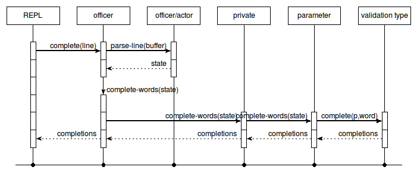
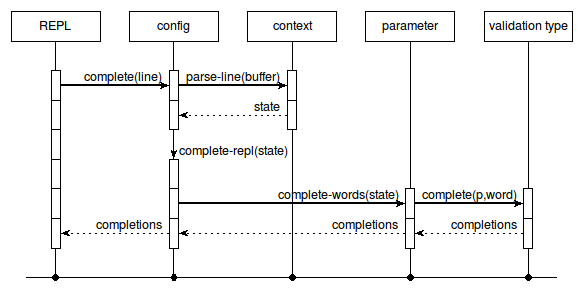

cmdr_dev~completion - Cmdr - Internals of command line completion
Welcome to the Cmdr project, written by Andreas Kupries.
For availability please read Cmdr - How To Get The Sources.
This internal document provides an overview on how the framework performs command-line completion in both the main and mini shells, referencing all the relevant methods and describing the data structures in use.
For more information about other internals of the framework please read Cmdr - The Developer's Guide.
The methods relevant to command-line completion can be found in four packages/classes, namely:
Takes a command-line and returns an initial parse structure as described in section Parse State
Hook method, entrypoint for the mini-shell. Takes the buffer to complete and returns the list of completions, which may be empty. Uses the workhorse method below and the cmdr::actor methods.
Main work method taking a parse structure and returning the list of completions. More details about it (and the mini-shell) can be found in section Mini Shell Operation.
Main work method for completion from the main shell, invoked by the cmdr::private instance having to complete words.
Hook method, entrypoint for the main shell. Takes the buffer to complete and returns the list of completions, which may be empty. Uses the workhorse method below and the cmdr::actor methods.
Main work method taking a parse structure and returning the list of completions. More details about it (and the main shell) can be found in section Main Shell Operation.
Can recurse to the same method of other officers, and private instances.
Main work method when reaching a parameter. Simply delegates the work to the method complete of the validation type associated with the parameter.
Main work method when reaching a private while recursing through the command hierarchy from officers. Delegates to the cmdr::config method of the same name.
The state structure used by all methods relevant to command line completion is a dictionary containing the six keys listed below. The only generator for this structure is method parse-line of the base-class cmdr::actor. All others parts of the system then only read and manipulate it.
A boolean flag. Indicates if the line parsed sucessfully into words (true), or not (false, syntax error).
The framework expects basic shell syntax with space-separated words using single- and double-quotes for words containing whitespace themselves. Note that complex syntax like variable- and command-substitutions are not allowed.
A copy of the unparsed command line.
The command line parsed into the bare words. The data is not valid if ok indicates a parsing error. This is not a list of strings, but actually a list of tokens.
Each token is a list of four elements containing, in the order below:
Type of the token (implicitly specifies found quoting).
Start index of token in line including quoting.
End index of token in line, including quoting.
The string value of the token, with escapes fully resolved. I.e. the actual word.
Note: If line ended in trailing whitespace the last element of this list will be an empty string representing the word started by the user, yet still empty.
The number of element in words. The data is not valid if ok indicates a parsing error.
The index of the current word in words currently considered by the completion code. Initially 0 this advances as the completion code works through the prefix to determine the context for the completion of the last word.
A boolean flag. Indicates if the pseudo-command .exit is active (true), or not. Initially true.
The main shell is fully implemented within the package cmdr::officer, while its command-line completion also reaches into the packages cmdr::private, cmdr::config, and cmdr::parameter. The purpose of this shell is interactive access to the commands of an officer. Which implies, for the toplevel officer, access to the entire command hierarchy.
To this end this shell accepts the names of all subordinate commands known to the officer as commands.
It may additional accept a hard-wired command .exit, depending on the parse state (see flag doexit).

This rest of this section is a textual description of the UML sequence diagram shown above.
Note that the state structure used by this code and referenced in the text is explained in section Parse State.
The main shell's core read-eval-print-loop calls on the instance method complete for command-line completion, providing the text of the buffer to complete at the end).
The method cmdr::actor::parse-line is called on first, to get a parse of the buffer. This parse is then delegated to the instance method complete-words to perform the bulk of the work.
Note: The officer instance has access to parse-line because it is a derived class of cmdr::actor.
The implementation of method complete-words applies the rules below:
If the buffer was not properly parsed (i.e. the state indicates a syntax error), the list of completions is empty.
When the buffer is empty all commands are possible completions, as are all the commands of the default subordinate, if any was specified.
If the current word (as per at) is the last word (per nwords) on the command line then completion is done using the set of commands known to the officer and its default subordinate, if any.
For a current word which is not the last, i.e. at the beginning or in the middle of the command line instead, then this word is the name of the subordinate object responsible for handling the remaining words.
No completion is done however if the current word does not yield a subordinate to delegate to (i.e. unknown or ambigous). If a default command is known this case will delegate to this subordinate, as a last attempt.
When a subordinate was found the system advances the current word, resets the doexit flag, and lastly invokes the method complete-words of the sub-ordinate.
When the subordinate is again an officer, these rules here apply again.
A private however will delegate to the embedded cmdr::config instance, again using the method complete-words.
This method processes the remaining words similar to how the command line is parsed at runtime to match words to parameters, to know at the end which (set of) parameter(s) governs the last word.
For options the last word may be partial name of a flag, or it may be the partial argument to an option. In case of the first the set of completions is the set of all flags with the word as its prefix. In case of the second the completion delegates to the parameter governing the flag, if there is any, which in turn delegates to its associated validation type.
For inputs the system essentially steps through a non-deterministic finite automaton to find all the parameters which may govern the current word. Completion is done as the union of the completion done by the individual parameters.
Note that the automaton and its results can be precomputed, this happens in the internal method CompletionGraph.
The mini shell and its command-line completion is fully implemented within the package cmdr::config. The purpose of this shell is the interactive entry of the parameters for a private.
To this end this shell accepts the system names of all parameters held by the config instance as commands, plus five hard-wired commands to control exit conditions and access to help.
The parameter commands all take single value as their argument, the string value to set. The sole exception to this are presence options which do not take any argument.
Similarly none of the hardwired commands take an argument. Their names all start with a .. They are, in alphabetical order, .cancel, .exit, .help .ok, and .run.

This rest of this section is a textual description of the UML sequence diagram shown above.
Note that the state structure used by this code and referenced in the text is explained in section Parse State.
The mini shell's core read-eval-print-loop calls on the instance method complete for command-line completion, providing the text of the buffer to complete at the end).
The method cmdr::actor::parse-line is called on first, to get a parse of the buffer. This parse is then delegated to the instance method complete-repl to perform the bulk of the work.
Note: The config instance has access to parse-line through its internal context command, which is an alias of the cmdr::private instance the configuration belongs to. This class is derived from cmdr::actor.
The implementation of method complete-repl applies the rules below:
If the buffer was not properly parsed (i.e. the state indicates a syntax error), the list of completions is empty.
When the buffer is empty all commands are possible completions.
When the buffer contains more than three words the list of completions is empty, as all valid mini-shell commands consist of at most two words.
A buffer containing a single word contain a partial command name and the list of completions is the set of commands having this word as prefix.
A buffer containing two words contains a command name and a partial argument. Completion is delegated to the parameter (method cmdr::parameter::complete-words) indicated by the command name, and through it to the associated validation type.
No completion is done however if the first word does not yield a parameter to delegate to (i.e. unknown or ambigous), or if it is a presence option, which does not take an argument.
The hardwired commands fall here implicitly under unknown parameter.
Both the package(s) and this documentation will undoubtedly contain bugs and other problems. Please report such at Cmdr Tickets.
Please also report any ideas you may have for enhancements of either package(s) and/or documentation.
arguments, command hierarchy, command line completion, command line handling, command tree, editing command line, help for command line, hierarchy of commands, interactive command shell, optional arguments, options, parameters, processing command line, tree of commands
Copyright © 2013-2016 Andreas Kupries
Copyright © 2013-2016 Documentation, Andreas Kupries